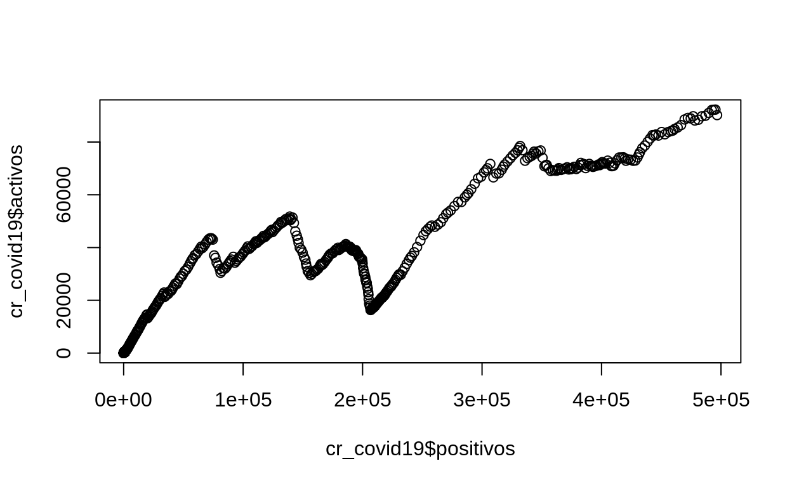
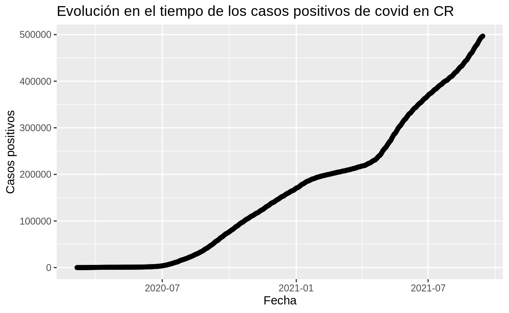

Resumen
La elaboración de gráficos estadísticos es una de las funcionalidades más utilizadas del lenguaje de programación R, el cual proporciona varios paquetes para estos efectos. En esta lección, se presentan ejemplos de varios tipos de gráficos generados mediante estos paquetes.
Conjuntos de datos utilizados en los ejemplos
En los siguientes ejemplos y ejercicios, se utilizarán varios conjuntos de datos, los cuales se cargan en data frames con la función read.csv() y se visualizan con la función View().
Casos de covid en Costa Rica
Este conjunto de datos es publicado por el Ministerio de Salud de Costa Rica. Contiene un registro por día con las estadísticas de casos positivos, fallecidos, activos y recuperados.
# Carga de datos desde un archivo CSV
cr_covid19 <-
read.csv(
file='https://raw.githubusercontent.com/tpb728O-programaciongeoespacialr/2021ii/main/datos/minsalud/covid/ultimafecha_CSV_GENERAL.csv',
sep = ","
)
# Despliegue de los datos
View(cr_covid19)
Casos de covid en Centroamérica
Este conjunto de datos publicados por el Centro de Coordinación para la Prevención de los Desastres en Centroamérica y República Dominicana (Cepredenac) tiene un registro por país con los casos (positivos, fallecidos, activos, recuperados) acumulados hasta la fecha en cada uno.
# Carga de datos desde un archivo CSV
ca_covid19 <-
read.csv(
file='https://raw.githubusercontent.com/gf0604-procesamientodatosgeograficos/2021i-datos/main/cepredenac/covid/ultimafecha_CSV_GENERAL_CENTROAMERICA.csv'
)
# Despliegue de los datos
View(ca_covid19)
Registros de presencia de mamíferos de Costa Rica
En los siguientes ejemplos y ejercicios, se utilizará un conjunto de registros de presencia de mamíferos de Costa Rica, obtenido a través de una consulta al portal de datos de la Infraestructura Mundial de Información en Biodiversidad (GBIF).
# Carga de datos desde un archivo CSV (separado por tabuladores)
registros_mammalia_cr <-
read.csv(
file='https://raw.githubusercontent.com/tpb728O-programaciongeoespacialr/2021ii/main/datos/gbif/mammalia-cr-registros.csv',
sep = "\t"
)
# Despliegue de los datos
View(registros_mammalia_cr)
Promedios de LST, NDVI y NDBI de los cantones de la GAM
Este conjunto de datos forma parte del Atlas de Servicios Ecosistémicos de la Gran rea Metropolitana (GAM). Para cada uno de los 31 cantones de la GAM se incluyen los promedios de:
- LST (Land Surface Temperature, Temperatura superficial del suelo)
- NDVI (Normalized Difference Vegetation Index, ndice de vegetación de diferencia normalizada)
- NDBI (Normalized Difference Built-up Index, ndice de edificaciones de diferencia normalizada)
# Carga de datos desde un archivo CSV
lst_ndvi_ndbi <-
read.csv(file = 'https://raw.githubusercontent.com/tpb728O-programaciongeoespacialr/2021ii/main/datos/atlasverde/lst-ndvi-ndbi/lst_ndvi_ndbi-cantones_gam.csv')
# Despliegue de los datos
View(lst_ndvi_ndbi)
Paquetes de R para graficación
R provee varios paquetes para generar gráficos. Aquí se estudiarán tres:
graphics
graphics: es un paquete para gráficos relativamente sencillos y forma parte de la instalación base de R.
ggplot2
ggplot2: es parte de Tidyverse, una colección de paquetes de R diseñada para utilizarse en ciencia de datos. Este paquete está basado en el libro The Grammar of Graphics, de Leland Wilkinson et al..
plotly
plotly: biblioteca de graficación disponible para JavaScript, Python, R y Julia.
Instalación, carga y ayuda
En R, los paquetes pueden instarlarse con la función install.packages():
# Instalación de ggplot2
install.packages("ggplot2")
# Instalación de hrbrthemes (temas adicionales para ggplot2)
install.packages("hrbrthemes")
# Instalación de plotly
install.packages("plotly")
# Instalación de dplyr
# (paquete para manipulación de datos de Tidyverse)
install.packages("dplyr")
# Opcionalmente, pueden instalarse todos los paquetes de Tidyverse
# Esta instalación toma más tiempo por tratarse de varios paquetes
install.packages("tidyverse")
Después de la instalación, los paquetes deben cargarse con la función library():
Para obtener información sobre un paquete, puede utilizarse el parámetro help de library():
# Ayuda en línea sobre ggplot2
library(help="ggplot2")
Tipos de gráficos
Gráficos de dispersión
Un diagrama o gráfico de dispersión (scatter plot) muestra la relación entre dos variables numéricas. Para cada punto de datos, el valor de la primera variable se representa en el eje X y el de la segunda variable en el eje Y.
graphics
La función plot() del paquete graphics recibe como argumentos los vectores de las variables que se desean graficar. El siguiente ejemplo usa las variables de casos positivos y casos activos de covid en Costa Rica.
# Gráfico
plot(cr_covid19$positivos, cr_covid19$activos)

Para mejorar el gráfico, pueden utilizarse otras opciones de la función plot():
Para incluir la incluir la columna con la fecha, esta debe convertirse primero a la clase Date:
# Conversión de la columna de fecha a la clase Date
cr_covid19$FECHA <- as.Date(cr_covid19$FECHA, "%d/%m/%Y")
# Gráfico con fechas
plot(
cr_covid19$FECHA,
cr_covid19$positivos,
main='Evolución en el tiempo de los casos positivos de covid en CR',
xlab='Fecha',
ylab='Casos positivos'
)
axis(1, cr_covid19$FECHA, format(cr_covid19$FECHA, "%d %b"), tick = FALSE)
ggplot2
Con la función ggplot(), del paquete ggplot2, puede obtenerse un resultado similar:
# Gráfico con fechas
ggplot(cr_covid19, aes(x = FECHA, y = positivos)) +
ggtitle('Evolución en el tiempo de los casos positivos de covid en CR') +
xlab('Fecha') +
ylab('Casos positivos') +
geom_point()

La manera usual de usar ggplot() es con un data frame como argumento, especificando cuales columnas usar como valores de x e y. La primera parte, ggplot(), crea la base del gráfico (i.e.el canvas), mientras que geom_point() agrega una capa adicional, lo mismo que ggtitle() y las funciones restantes.
Ejercicio:
a. Modifique el gráfico anterior para mostrar los casos fallecidos en el eje y.
El siguiente gráfico utiliza un tema proporcionado por la función theme_ipsum().
# Gráfico de dispersión de NDVI y LST
ggplot(lst_ndvi_ndbi, aes(x = ndvi_promedio)) +
geom_point(
aes(y = lst_promedio)
) +
ggtitle("Relación entre NDVI y LST en la GAM") +
xlab("NDVI") +
ylab("LST") +
theme_ipsum()
Gráficos de líneas
Un gráfico de líneas (line graph o line chart) muestra la evolución de una o varias variables numéricas. Los puntos de datos se conectan mediante segmentos de líneas rectas. Los gráficos de líneas son usados frecuentemente para visualizar tendencias de los datos en intervalos de tiempo (i.e.en series temporales).
graphics
Puede hacerse un gráfico de líneas con la función plot() al pasarle como argumento type="l".
Si se desea agregar más líneas, o series de puntos, debe entonces llamarse a plot() para la primera variable (ej. la primera línea) y luego agregar las restantes series de líneas o de puntos con las funciones lines() y points().
# Gráfico de línea de casos positivos
plot(
cr_covid19$FECHA,
cr_covid19$positivos,
main='Evolución en el tiempo de los casos de covid en CR',
xlab='Fecha',
ylab='Casos',
type="l",
col="blue"
)
axis(1, cr_covid19$FECHA, format(cr_covid19$FECHA, "%d %b"), tick = FALSE)
# Casos activos
lines(cr_covid19$FECHA, cr_covid19$activos, col="red")
# Casos recuperados
lines(cr_covid19$FECHA, cr_covid19$RECUPERADOS, col="green")
# Casos fallecidos
lines(cr_covid19$FECHA, cr_covid19$fallecidos, col="violet")
ggplot2
Con las funciones de ggplot2 puede conseguirse un resultado similar al crear el gráfico base con ggplot() y agregar las series de líneas y puntos con geom_line() y geom_point().
# Gráfico de líneas de casos de covid en Costa Rica
ggplot(cr_covid19, aes(x=FECHA)) +
ggtitle("Evolución en el tiempo de los casos de covid en CR") +
xlab("Fecha") +
ylab("Casos") +
geom_line(aes(y = positivos), color = "blue") +
geom_point(aes(y = positivos), color = "blue") +
geom_line(aes(y = activos), color = "red") +
geom_point(aes(y = activos), color = "red") +
geom_line(aes(y = RECUPERADOS), color="green") +
geom_point(aes(y = RECUPERADOS), color = "green") +
geom_line(aes(y = fallecidos), color="violet") +
geom_point(aes(y = fallecidos), color = "violet")
Ejercicio:
a. Modifique el gráfico anterior y aumente el tamaño de los puntos.
plotly
Versión del gráfico en plotly:
# Gráfico de líneas de casos de covid en Costa Rica
plot_ly(data = cr_covid19,
x = ~ FECHA,
y = ~ positivos,
name = 'Positivos',
type = 'scatter',
mode = 'lines',
line = list(color = "blue")) %>%
add_trace(y = ~ activos,
name = 'Activos',
mode = 'lines',
line = list(color = "red")) %>%
add_trace(y = ~ RECUPERADOS,
name = 'Recuperados',
mode = 'lines',
line = list(color = "green")) %>%
add_trace(y = ~ fallecidos,
name = 'Fallecidos',
mode = 'lines',
line = list(color = "violet")) %>%
layout(title = "",
yaxis = list(title = "Cantidad de casos"),
xaxis = list(title = "Fecha"),
legend = list(x = 0.1, y = 0.9),
hovermode = "compare")
Ejercicio:
a. Modifique el gráfico anterior y muestre las etiquetas de los controles en español.
Gráficos de barras
Los gráficos de barras (barcharts o barplots) muestran la relación entre una variable categórica y una variable numérica. Cada entidad de la variable categórica es representada mediante una barra, en la que su altura representa el valor correspondiente de la variable numérica.
Para algunos ejemplos de esta sección, se utilizará el conjunto de datos de casos de covid de Centroamérica. Para facilitar su visualización, se ordenan los registros de acuerdo con la columna de casos confirmados, mediante la función order().
# Ordenar de mayor a menor
ca_positivos.ordenado <- order(ca_covid19$positivos, decreasing=TRUE)
# Nuevo data frame ordenado
ca_covid19.positivos <- ca_covid19[ca_positivos.ordenado,]
graphics
La función barplot(), del paquete graphics, se utiliza en el siguiente ejemplo para generar un gráfico de barras de los casos confirmados.
Barras simples
barplot(
height=ca_covid19.positivos$positivos,
names.arg=ca_covid19.positivos$pais,
xlab="País",
ylab="Casos positivos",
main="Casos positivos de covid en Centroamérica"
)
Cantidad de registros de mamíferos por año
# Generación de un nuevo data frame
registros_agrupados_x_anyo <-
registros_mammalia_cr %>%
dplyr::count(year)
# Gráfico de barras verticales
barplot(
registros_agrupados_x_anyo$n,
names.arg = registros_agrupados_x_anyo$year,
main = "Cantidad de registros de mamíferos por año",
)
# Gráfico de barras horizontales
barplot(
registros_agrupados_x_anyo$n,
names.arg = registros_agrupados_x_anyo$year,
main = "Cantidad de registros de mamíferos por año",
horiz = TRUE,
las=1
)

Cantidad de registros de mamíferos por orden taxonómico
Cantidad de registros de carnívoros por familia taxonómica
# Generación de un nuevo data frame
registros_carnivora_agrupados_x_familia <-
registros_mammalia_cr %>%
filter(order == "Carnivora") %>%
dplyr::count(family)
# Gráfico de barras horizontales
par(mai=c(1, 2, 1, 1))
barplot(
registros_carnivora_agrupados_x_familia$n,
names.arg = registros_carnivora_agrupados_x_familia$family,
main = "Cantidad de registros por familia de carnívoros",
horiz = TRUE,
las=1
)
Cantidad de registros de felinos por especie
# Generación de un nuevo data frame
registros_felidae_agrupados_x_especie <-
registros_mammalia_cr %>%
filter(family == "Felidae") %>%
dplyr::count(species)
# Gráfico de barras horizontales
par(mai=c(1, 2, 1, 1))
barplot(
registros_felidae_agrupados_x_especie$n,
names.arg = registros_felidae_agrupados_x_especie$species,
main = "Cantidad de registros por especie de felinos",
horiz = TRUE,
las=1
)
Ejercicio:
Haga un gráfico de barras que muestre la cantidad de registros por especie de felinos o de caninos.
ggplot2
La función geom_col(), en combinación con ggplot(), puede utilizarse para generar gráficos de barras.
Note el uso de la función reorder() en el ejemplo anterior, para ordenar el orden de las barras (i.e.los países) en el eje X y el de geom_text() para desplegar etiquetas sobre las barras.
Barras apiladas
Cantidad de registros de felinos por especie y tipo de registro (basis or record)
# Generación de un nuevo data frame
registros_felidae_agrupados_x_especie_tiporegistro <-
registros_mammalia_cr %>%
filter(family == "Felidae") %>%
dplyr::count(species, basisOfRecord)
# Gráfico de barras apiladas
ggplot(
registros_felidae_agrupados_x_especie_tiporegistro,
aes(x = species, y = n, fill = basisOfRecord)
) +
geom_col() +
coord_flip()
Barras agrupadas
Cantidad de registros de felinos por especie y tipo de registro (basis or record)
# Gráfico de barras apiladas
ggplot(
registros_felidae_agrupados_x_especie_tiporegistro,
aes(x = species, y = n, fill = basisOfRecord)
) +
geom_col(position = "dodge") +
coord_flip()
Ejercicio:
Para los dos últimos gráficos:
- Ordene las barras por tamaño, de mayor a menor.
- Coloque las etiquetas de cantidades (n) al final de cada barra.
- Agregue títulos para los gráficos y para los ejes x e y.
Histogramas
Un histograma es una representación gráfica de la distribución de una variable numérica en forma de barras (bins). La altura de cada barra representa la frecuencia de un rango de valores de la variable.
ggplot2
# Histograma de LST
ggplot(lst_ndvi_ndbi, aes(x = lst_promedio)) +
geom_histogram(binwidth = 2,
color = "red",
fill = "white") +
ggtitle("Distribución de LST en la GAM") +
xlab("LST") +
ylab("Frecuencia") +
theme_ipsum()
# Histograma de NDVI
ggplot(lst_ndvi_ndbi) +
geom_histogram(
aes(x = ndvi_promedio),
binwidth = 0.1,
color = "green",
fill = "white"
) +
ggtitle("Distribución de NDVI en la GAM") +
xlab("NDVI") +
ylab("Frecuencia") +
theme_ipsum()
# Histograma de NDBI
ggplot(lst_ndvi_ndbi) +
geom_histogram(
aes(x = ndbi_promedio),
binwidth = 0.05,
color = "black",
fill = "white"
) +
ggtitle("Distribución de NDBI en la GAM") +
xlab("NDBI") +
ylab("Frecuencia") +
theme_ipsum()
Ejercicio: grafique las variables de NDVI y NDBI en un mismo histograma.
Gráficos de densidad
Un gráfico de densidad representa mediante una curva la distribución de una variable numérica. Utiliza una estimación de densidad de kernel para mostrar la función de densidad de probabilidad de una variable.
ggplot2
# Gráfico de densidad de NDVI
ggplot(lst_ndvi_ndbi) +
geom_density(
aes(x = ndvi_promedio),
color = "black",
fill = "green",
alpha = 0.4
) +
ggtitle("Distribución de NDVI en la GAM") +
xlab("NDVI") +
ylab("Densidad") +
theme_ipsum()

Ejercicio: agregue un histograma al gráfico de densidad de NDVI.
Gráficos de lollipops
Un gráfico de lollipop es similar a un gráfico de barras, en el cual las barras se transforman en líneas que finalizan en un círculo. Muestran la relación entre una variable categórica y una variable numérica.
ggplot2
# Gráfico de lollipop que muestra el promedio de NDVI en cada cantón de la GAM
lst_ndvi_ndbi %>%
arrange(ndvi_promedio) %>%
mutate(canton = factor(canton, canton)) %>%
ggplot(aes(x = canton, y = ndvi_promedio)) +
geom_segment(aes(
x = canton,
xend = canton,
y = 0,
yend = ndvi_promedio
), color = "grey") +
geom_point(size = 3, color = "#69b3a2") +
coord_flip() +
theme_ipsum() +
ggtitle("Promedio de NDVI en cantones de la GAM") +
xlab("Cantón") +
ylab("NDVI") +
theme(
text = element_text(size = 8),
panel.grid.minor.y = element_blank(),
panel.grid.major.y = element_blank(),
legend.position = "none"
)
Ejercicio: genere un gráfico de lollipop que muestre el LST promedio en cada cantón.
Ejercicio: genere un gráfico de lollipop que muestre conjuntamente el NDVI promedio y el NDBI promedio en cada cantón.
Otros
Gráficos de doble eje
plotly
library(plotly)
# Ordenar de mayor a menor LST
df_lst_ndbi_ndvi.temp <-
order(lst_ndvi_ndbi$lst_promedio, decreasing = FALSE)
# Nuevo data frame ordenado
df_lst_ndbi_ndvi.ordenado_lst <-
lst_ndvi_ndbi[df_lst_ndbi_ndvi.temp, ]
ay <- list(
tickfont = list(color = "green"),
overlaying = "y",
side = "right",
title = "NDVI"
)
plot_ly(
data = df_lst_ndbi_ndvi.ordenado_lst,
x = ~ reorder(canton,-lst_promedio),
y = ~ lst_promedio,
name = 'LST',
type = 'scatter',
mode = 'lines',
line = list(color = "red")
) %>%
add_trace(
y = ~ ndvi_promedio,
name = 'NDVI',
mode = 'lines',
line = list(color = "green"),
yaxis = "y2"
) %>%
layout(
title = "La vegetación urbana regula la temperatura",
yaxis = list(title = "LST", tickfont = list(color = "red")),
yaxis2 = ay,
xaxis = list(title = "Cantón"),
legend = list(x = 0.5, y = 1.0),
hovermode = "compare"
) %>%
config(locale = "es")